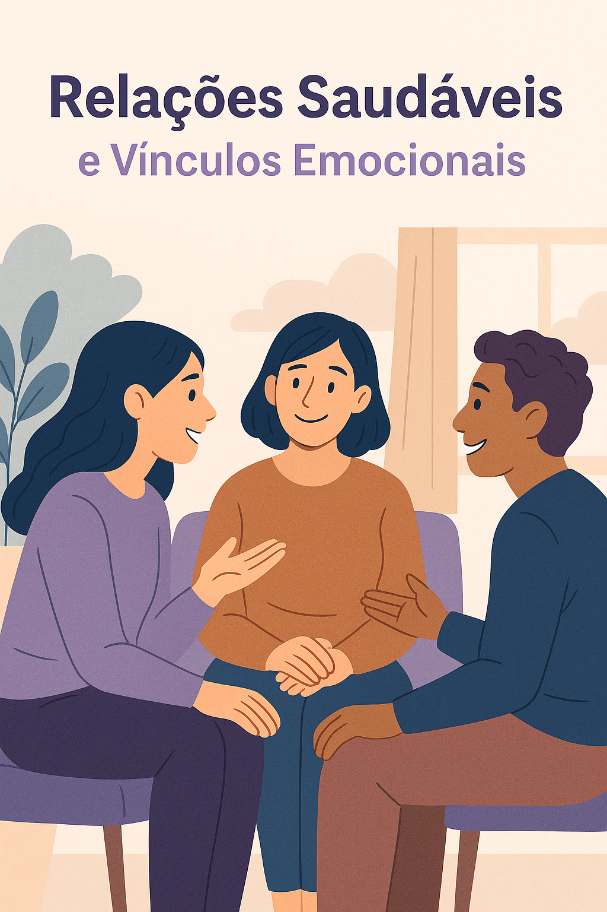
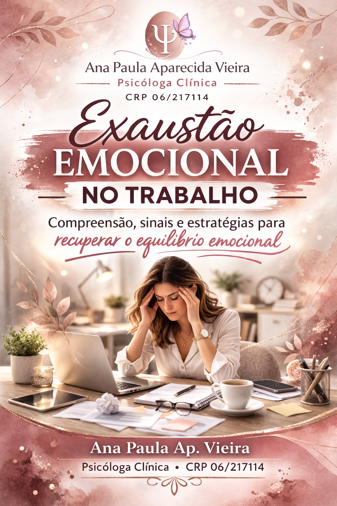

Psicoterapia Infantil
Acolhimento emocional para a criança, auxiliando na expressão de sentimentos e no desenvolvimento saudável. Quando necessário, também realizo orientação parental para apoiar pais e responsáveis.

Ansiedade, exaustão, conflitos ou fases difíceis podem tornar o dia a dia pesado. A psicoterapia é um espaço seguro de escuta e acolhimento para compreender o que você sente e construir novos caminhos.
Atendimento presencial em Itapetininga-SP e online para todo o Brasil.

Olá, eu sou Ana Paula Ap. Vieira, Psicóloga Clínica (CRP 06/217114). Meu trabalho é oferecer um ambiente ético, humano e acolhedor para que você possa falar sobre suas dores, pensamentos e sentimentos sem julgamentos.
Atendo de forma presencial em Itapetininga-SP e também online para todo o Brasil, respeitando o seu ritmo e a singularidade da sua história.
Se fizer sentido para você, podemos conversar e entender qual caminho de cuidado é mais adequado neste momento.
A terapia pode ser um suporte importante para compreender essas experiências, fortalecer recursos internos e construir formas mais saudáveis de se relacionar consigo e com a vida.
O atendimento é pensado para acolher diferentes fases da vida — infância, adolescência e vida adulta — sempre com ética, escuta e respeito à singularidade de cada pessoa.
Acolhimento emocional para a criança, auxiliando na expressão de sentimentos e no desenvolvimento saudável. Quando necessário, também realizo orientação parental para apoiar pais e responsáveis.
Um espaço seguro para falar sobre emoções, conflitos, escola, amizades e família — sem rótulos e sem julgamentos. Trabalhamos juntos o fortalecimento da identidade, autonomia, autoestima e habilidades de comunicação, respeitando o tempo e o jeito de cada adolescente.
Um processo terapêutico para aprofundar o autoconhecimento, organizar pensamentos e emoções, e desenvolver estratégias mais saudáveis para lidar com ansiedade, sobrecarga, autocobrança e desafios nos relacionamentos. Você não precisa dar conta de tudo sozinho(a).
Atendimento presencial em Itapetininga-SP e online para todo o Brasil.
As sessões acontecem, em geral, uma vez por semana, com duração média de 50 minutos. Em alguns casos, podemos avaliar outra frequência junto com você.
Os valores das sessões são combinados diretamente com cada pessoa, considerando sua realidade e possibilidades. Entre em contato para saber mais.
No primeiro contato, você pode tirar dúvidas sobre a forma de atendimento, valores e horários disponíveis, sem compromisso.
Ficou com alguma dúvida sobre o funcionamento, valores ou como começar? Veja as respostas às perguntas mais comuns no FAQ.
A experiência terapêutica é única para cada pessoa. Na página de depoimentos, você encontra relatos de forma respeitosa e sigilosa, preservando a identidade de cada paciente.
Materiais pensados para orientar, acolher e ajudar você a compreender melhor o que está vivendo. Se fizer sentido, você também pode levar esses temas para a terapia.

Quando a criança muda o comportamento, chora mais, fica irritada ou “se fecha”, isso também é linguagem emocional. Um espaço lúdico e acolhedor para ajudar a criança a nomear sentimentos e fortalecer recursos com segurança.

Adolescência pode ser confusa: oscilação de humor, inseguranças, conflitos em casa, na escola e com amigos. A terapia é um lugar de escuta sem julgamento para construir identidade, autonomia e autoestima.

Você segue funcionando, mas por dentro está sobrecarregado(a): ansiedade, autocobrança, cansaço mental e dificuldades nos vínculos. A terapia ajuda a organizar emoções, compreender padrões e criar formas mais leves de lidar com a vida.

Educar cansa — e às vezes dá a sensação de que nada funciona. Birras, desafios, limites e culpa parental são mais comuns do que parecem. O suporte psicológico contribui para compreender comportamentos e fortalecer o vínculo com mais segurança emocional.
Pensamentos acelerados, tensão no corpo, medo do futuro e sensação de que você nunca descansa? Entenda sinais, gatilhos e caminhos de cuidado para desacelerar com mais gentileza.

Quando a mente não desliga, tudo pesa: irritabilidade, desânimo, sensação de “estar no limite” e falta de energia até para o que você gosta. Saiba como identificar e começar a se cuidar.

Autocrítica constante, comparação, insegurança e dificuldade de reconhecer o próprio valor podem virar um ciclo silencioso. Um espaço de leitura para entender a raiz disso e dar os primeiros passos com mais compaixão.

Você sente que repete os mesmos padrões? Dificuldade de colocar limites, medo de desagradar, discussões que viram distância… Comunicação e vínculo podem ser construídos — com clareza e cuidado.

Material psicoeducativo em PDF, com acesso imediato após a compra, para ajudar você a reconhecer sinais de esgotamento emocional e encontrar caminhos de cuidado.

Guia psicoeducativo para compreender a ansiedade e os pensamentos acelerados, com linguagem acessível, acolhedora e baseada na Psicologia científica.
Guia psicoeducativo para compreender a autoestima, reduzir a autocrítica e desenvolver uma relação mais saudável consigo mesmo(a), com linguagem acolhedora e clara.
Conteúdo pago • acesso imediato
Guia psicoeducativo para identificar sinais de esgotamento, compreender causas e iniciar um caminho de cuidado e recuperação do equilíbrio emocional no trabalho.
Conteúdo pago • acesso imediatoSe você deseja agendar uma sessão ou tirar dúvidas, preencha o formulário abaixo com seus dados e uma breve descrição do motivo do contato. Se preferir, envie mensagem pelo WhatsApp.